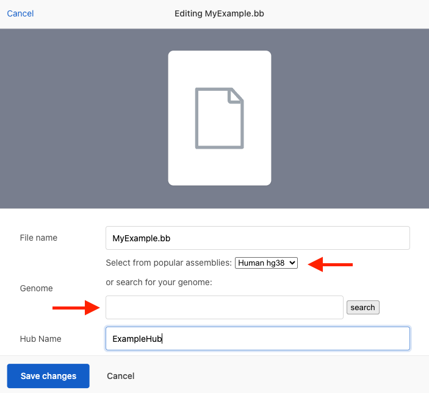

Upload your track hub files to UCSC and view your bigBed, bigWig, BAM, VCF, and other supported files -- no need to rely on third-party hosting services such as Dropbox, Google Drive, or AWS.
Each account is allocated 10 GB of storage. While we strive to maintain uninterrupted access, please be sure to maintain your own backups. Data persistence over the long term is not guaranteed. To request additional storage space, please contact us.
There are two primary ways to upload your files:
If a hub.txt file is not provided when uploading the data files, a hub.txt file is automatically generated. The generated hub.txt file is configured with the useOneFile trackDb setting, and as a result, each hub is limited to a single genome assembly.
Editing the generated hub.txt file is not yet supported. To customize the hub configuration or data display, replace the generated hub.txt file with your own version after uploading the data files.
By default, your most recently used genome assembly is selected after choosing which files to upload. To use a different assembly, the popular assemblies drop-down menu or the search box can be used to select another genome assembly.
